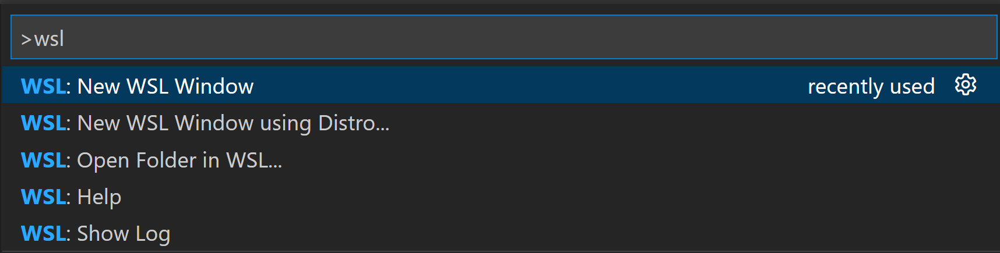
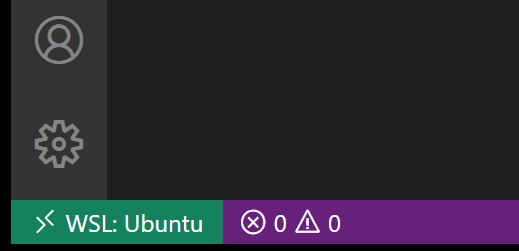
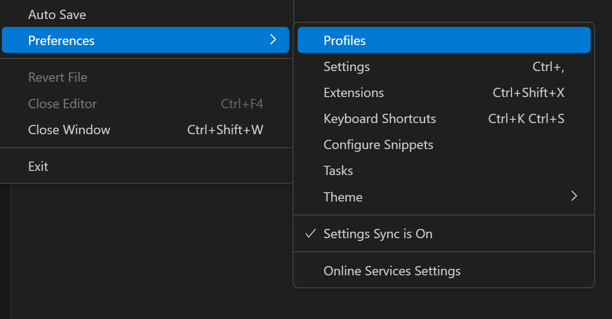
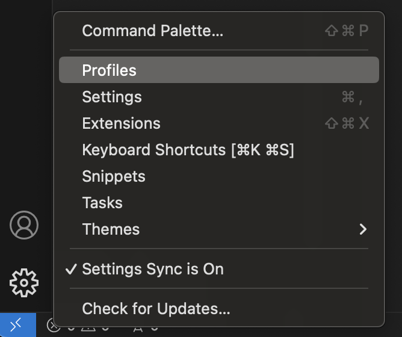
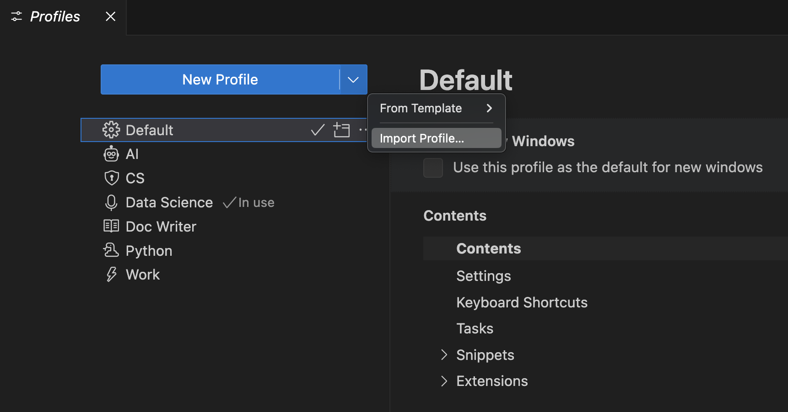
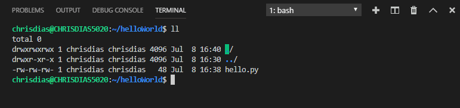

0. Setting Up
This section will equip your computer with all necessary tools for this course. The motivation behind each tool will be explained in the later sessions. For now, just follow the instructions and prepare to awe (and, at times, get frustrated) with power of computing.
Although the course advertises itself as programming language agnostic, Python will be used to provide ‘meat’ for coding examples. See a Justin Bois’s note on “superiority” of one programming language over another below.
There are plenty of programming languages that are widely used in data science and in scientific computing more generally. Some of these, in addition to Python, are Matlab/Octave, Mathematica, R, Julia, Java, JavaScript, Rust, and C++.
I have chosen to use Python. I believe language wars are counterproductive and welcome anyone to port the code we use to any language of their choice, I nonetheless feel we should explain this choice.
Python is a flexible programming language that is widely used in many applications. This is in contrast to more domain-specific languages like R and Julia. It is easily extendable, which is in many ways responsible for its breadth of use. We find that there is a decent Python-based tool for many applications we can dream up, certainly in data science. However, the Python-based tool is often not the very best for the particular task at hand, but it is almost always pretty good. Thus, knowing Python is like having a Swiss Army knife; you can wield it to effectively accomplish myriad tasks. Finally, we also find that it has a shallow learning curve with most students.
by Justin Bois, bootcamp 2025
UNIX
The motivation behind the use of terminal will be explained in the next session
First, we need an efficient way to interact with your computer. UNIX is by far the most well supported and used operating system (OS) to do so. It allows Apple Mac users to sigh in relief since their computers are based on UNIX and can skip to the next section. Windows, however, is another story.
WSL (Windows users only)
Being a popular operating system doesn’t make Windows easy to use for software development. Windows Subsystem for Linux (WSL) circumvents this problem by creating a separate environment on your computer to run Linux, a free UNIX-like OS. We will install Linux with a particular flavour called Ubuntu. Right now, we will not go into details. All you need to know is that by the end of this installation you will be free to use a vast majority of scientific software available on the web.
Installation
There are two ways to install WSL with Ubuntu: graphical and terminal. The graphical method uses the Microsoft Store and should be straightforward. The terminal method uses PowerShell and is less user-friendly but more robust to errors. Choose whichever suits you best.
If you’re experiencing some troubles with installation, it is worth:
- Updating your Windows version. Open Windows Settings, go to ‘Updates and Security’ and hit ‘Check for Updates’.
- Enable WSL on your Windows manually.
Click on the Start Menu and search for “Turn Windows features on or off”.
Open the result. A new window will appear with a list of Windows features.
Scroll down and check the following two boxes:
‘Windows Subsystem for Linux’ ✅
‘Virtual Machine Platform’ ✅
Click OK. Windows will apply the changes and may ask you to restart your computer.
After restarting, WSL will be enabled on your system.
Open the Start Menu, and search for “PowerShell”.
Right-click and choose “Run as administrator”.
Enter the following command to install WSL and hit Enter:
wsl --install

You need to restart your computer after installing WSL.
Once restarted, open PowerShell again in the administartive mode and type:
wsl --installBy default, Ubuntu will be installed as the main Linux distribution. WSL and Ubuntu will appear in your Start Menu and the Search Bar options.
Creating a Default UNIX User Account
Now, that you have Ubuntu installed, you need to create an account in order to start using it. Generally it is called a “UNIX User Account” but a “Ubuntu account” would do as well.
Before you set a username on your computer, sign up for a GitHub account (see Section 4.1) and check if that username is available. This unity in names will make it easier for you to orient your files and folder,as well establish a virtual nickname that you can use consistently in the future projects.

For a username: - Use only lower-case letters and numbers. - Start with a letter. - Be short and descriptive.
If your name is John Derek Smith you can try: jsmith, jdsmith, or johnsmith. Any other imaginary name is permissible as long as it meets the criteria above. D&D, MTG, LoL, and WoW nicknames, if that’s is publically appropriate.
For a password, you can set the same one you have for your OIST account to make it easier to remember. It will be used for login and authentication but, more importantly, commands like sudo that grant administrative priviledges. If not sure what makes a strong password consult XKCD.
- Launch Ubuntu terminal

- You will be prompted to enter a username.

Enter your chosen username and hit Enter. If you make a mistake in typing your username, you can close the window and open it again. In this example, tunkert is the username.

- Choose a password. You will not see it as you type due to default UNIX security reasons. If not sure what you entered is correct, hold Backspace for a couple of seconds or hit
Ctrl+U. That will erase everything you have written. After making sure you have entered the correct password, hit Enter. If unsure, write the password down.

- Re-type the chosen password and hit Enter.

- Once both username and password are entered, you will see a welcome message from Ubuntu.

The typing line takes the new form of tunkert@LAPTOP-JU9CGB60:~$. Can you guess what the name after @ means? We will talk about what each symbol means in the terminal section.
- To ensure that Ubuntu is up-to-date, type the following and press Enter:
sudo apt update && sudo apt upgrade -yWe will understand the logic behind this command later in the next section as well.

- You will be prompted to enter the password (Do you remember?). Enter the password—you will not see it—and press Enter.

- The update will begin. In the end, you will have an empty typing line with the latest Ubuntu.

You are now set and ready to install all the wonderful programming tools that have been developed over the past 50 or so years by the developer’s community. As you might guess, there are hundreds of thousands of programs out there, and ideally, we would like to keep track of what we install. That will be our next installation.
IDE or not to IDE?
An integrated development environment (IDE) is a software application that provides a few tools to make coding easier. The most important of these is a way to write the code itself! IDEs are not the only way to program, but they are perhaps the most useful. Note that the language and the place you write the language (the IDE) are separate things: the language is a way of processing your instructions, the IDE is where you write those instructions. There are a lot of IDEs out there. This course will use Microsoft’s Visual Studio Code, which works on all major operating systems and is one of the most popular.
Adapted from Arthur Turell, P4DS.
Visual Studio Code
Visual Studio Code, aka VS Code, has the following useful features:
a way to run your code interactively (line-by-line) or all at once
a way to debug (look for errors) in your code
a quick way to access helpful information about commonly used software packages
automatic code formatting, so that your code follows best practice guidelines
auto-completion of your code when you hit TAB
automatic code checking for basic errors
coloring your brackets in pairs so you can keep track of the logical order of execution of your code!

Installation
Install VS Code from the official website (it will determine which version of the installer to use) or download installer manually here.

Windows users will be promted to install the VS Code WSL extension. Agree and see Section 2.1.2.1.
Extensions
The biggest power of VS Code lies in its extensions. They are ubiquitous allowing you to boost your IDE simply by installing what others have solved for you. You can browse them by clicking on the four cube icon on the side bar or by pressing Cmd/Ctrl+Shift+X.

There are certain basic extensions that almost every VS Code user will have installed but it can be cumbersome to manually select all those one by one. That’s how VS Code Profiles have been created.
WSL Extenison (Windows users only)
Windows user will need one more step before they can start using VS Code at its full potential. Right now, you open VS Code and all files and computation is done in Windows environment. We want VS Code to use Ubuntu that lives in WSL. Using the Visual Studio Code WSL extension VS Code will integrate Ubuntu into its environment.
Once the extension is installed you need to open VS Code with Ubuntu as the main environment. To do that, locate a button in the left-bottom corner of the VS Code window consisting of two stacked arrow symbols ‘>’ and ‘<’. Click on it.

After clicking on this button, a promt line will appear on the top of the window. Select WSL: New WSL Window and press Enter.

A new window will open. This time, notice that the corner button has changed. Now, we are running on Ubuntu.

Windows users will use this environment for the course.
Profiles
Profiles can be used to customize VS Code for students to ease the use in a classroom setting. Profiles allow educators to quickly share a customized VS Code setup with students.
You can access the Profiles editor in either of the following ways: - From the Code > Settings > Profiles menu item
From the Manage gear button in the bottom of the Activity Bar.

You will see that the Default profile is in use. We will import the GECS profile for this course. The profile file is stored on GitHub (one of its nice features). That code is shown below.
However, you don’t need to copy it, only need the link.
https://gist.github.com/igorsdub/04f6a1191dde8e09091a1099fe87d5beImport the GECS profile from the Profiles editor by selecting the Import Profile… button in the dropdown actions of the New Profile button.

When you select Import Profile…, you are prompted for the URL of a GitHub gist or the file location of a profile via an Import Profile dialog. Paste the link above and click Create button below.
Accept any installations or suggestions offered by extensions. Now, you are ready to go!
Package Manager
An out-of-box UNIX-based OS has limited amount of tools. For this course we will use various open-source tools which need to be downloaded, installed, updated and keeping track of. Package manager is a tool to manage tools. We will use Pixi package manager in this course and will dive deep into it in the Virtual Environments session.
Pixi
Pixi is the latest package manager and unlike its competition (e.g. Conda, Mamba, uv) supports many programming languages besides Python and is gaining momentum among software developers and scientist.
Here we will have to use a terminal since Pixi can not be installed using a visual application, say by downloading an .exe file for Windows or .dmg for macOS.
That’s the reason we went to such lengths to install Ubuntu on Windows. Now, you are able to access a much larger range of applications which are inaccessible to graphical user interface (GUI) users.
We will use the VS Code’s terminal to do the installation. To open the terminal select View > Terminal from the menu bar, or by pressing the Ctrl/Cmd+` keyboard shortcut. A terminal window will open at the bottom.

To install Pixi run the following command in your terminal:
curl -fsSL https://pixi.sh/install.sh | shTo verify that Pixi got installed successfully restart the terminal. There are two ways to do so. Easy way is to kill it and open a new terminal window. Another way is to type the following for Ubuntu users:
source ~/.bashrcmacOS user need to type:
source ~/.zshrcOK, now that the terminal is reset, type:
which pixiYou will see something like /Users/username/.pixi/bin/pixi printed, where username is your chosen username.
Developer Platform
Your code needs to live somewhere besides your computer. Otherwise, if you lose your computer, will you be able to access your projects? For this purpose, we will use GitHub which will take a central role alongside Git during the session on version control.
GitHub
GitHub is a widely used platform to store, manage, share, and collaborate with others on software projects. An account is free and you can upgrade to Pro for free as a student (see the tip below). Sign up here.
As a student, you can get a free GitHub Pro account as part of GitHub Education alongside other perks. Once you have a basic account, follow this link.
You can use a photo of your student ID card (both-sides) or other eligible documents listed on here.
Shell Prompt (Optional)
Starship
Starship is by far the most widely used shell prompt. It is a customizable prompt that controls how your terminal looks when you type a command. It is pretty and versatile.

To install Starship open VS Code terminal by selecting View > Terminal from the menu bar, or by pressing the Ctrl/Cmd+` keyboard shortcut. A terminal window will open at the bottom. Then type:
curl -sS https://starship.rs/install.sh | shNext, you will need to tell the terminal to start Starship every time you open a new terminal. This is similar to how Windows or macOS asks you if you want to run a program every time you start your computer.
Windows/Ubuntu users must execute in their terminal the following:
echo 'eval "$(starship init bash)"' >> ~/.bashrcmacOS users have a very similar command:
echo 'eval "$(starship init zsh)"' >> ~/.zshrcAfter you restart the terminal, close it and open a new one, you should see the change in how it looks like. You can explore all the different looks you can access with Starship here.